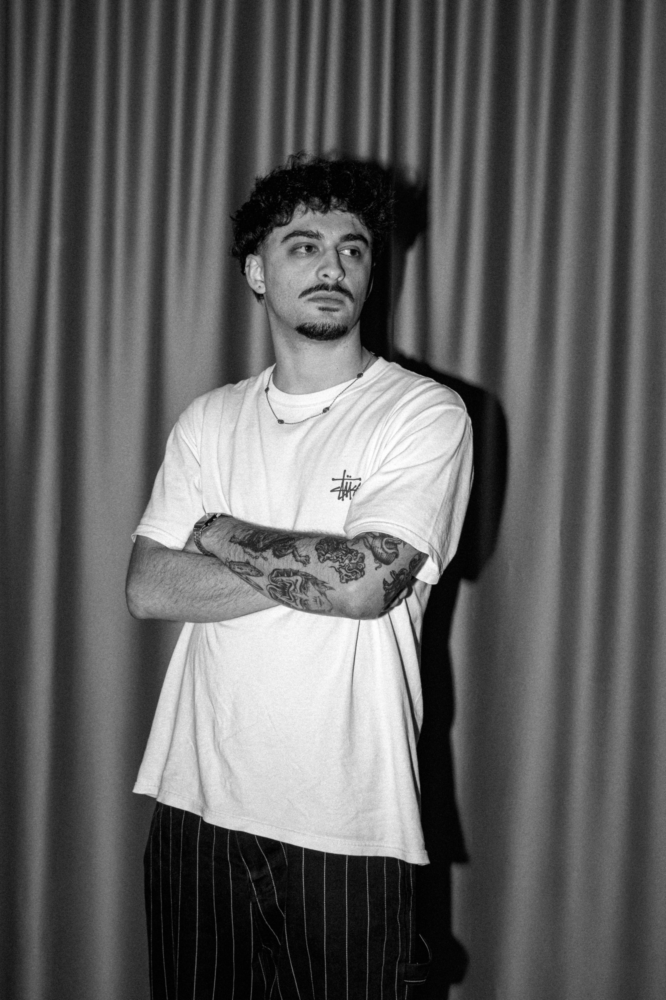
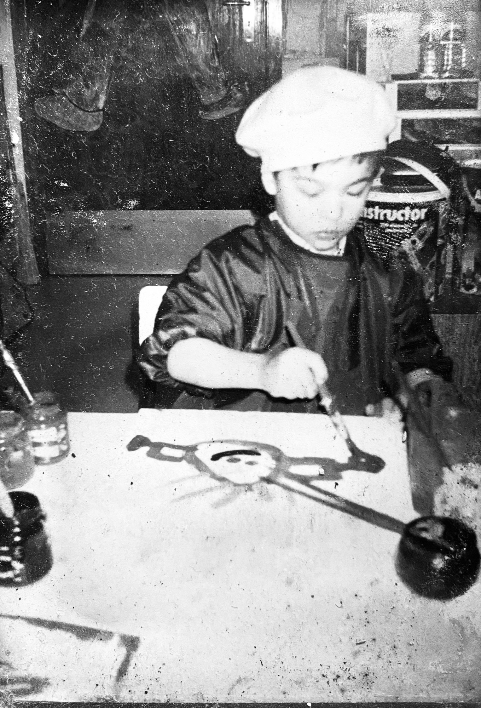
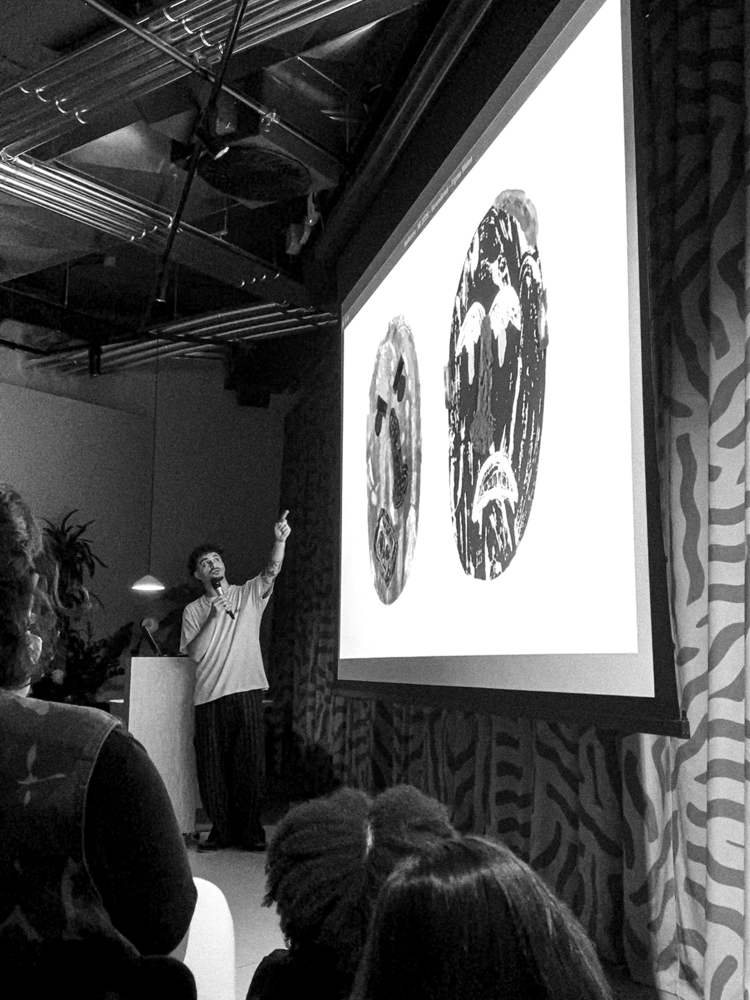

Diogo Pacheco Saraiva is a graphic designer based in Porto, Portugal.His practice moves between research and visual exploration, letting each project’s purpose shape its form while staying anchored in the message it needs to convey.He currently works as a freelancer, collaborating directly with brands, services, organisations and individuals.
Services
Poster Design
Branding
Visual Identity
Editorial Design
Motion Design
Merch Design
Web Design
Illustration
Social Media
Email
diogopachecosaraiva
Instagram
@d.p.saraiva
-
- Mad Shift - FMAD
- Descomunal - Nova Fornada
-
- Mad Shift - FMAD (Making Marks)
-
- Masters Degree
- Short Course on Creative Coding
- Bachelors Degree
Collaborators
Alexandre Campelo
Bernardo Guedes
Hélder Pinho
José Pedro Carmo
Marco da Silva
Nuno Pinto
Clients
Comédia a Preto & Branco
LoSaint Barberclub
Portela d’Arcada
Project Conta B
RUGA
Villa Regio


